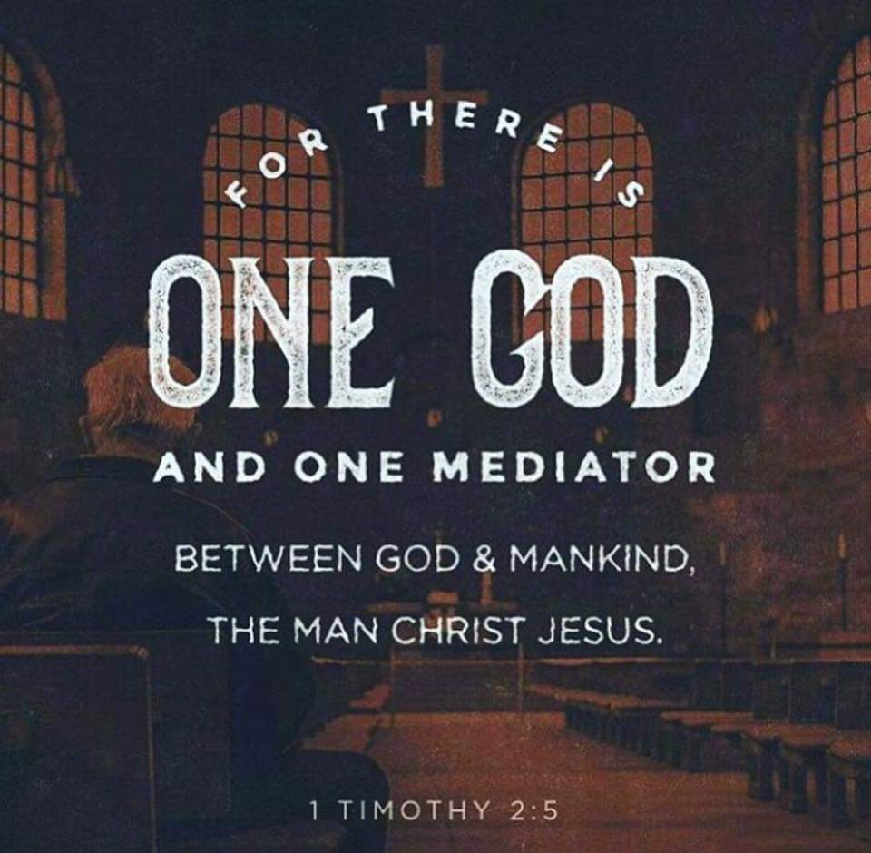

Isaiah 40:28-29
[28]Hast thou not known? hast thou not heard, that the everlasting God,
the LORD, the Creator of the ends of the earth,
fainteth not, neither is weary? there is no searching of his understanding.
[29]He giveth power to the faint; and to them that have no might he increaseth strength.
|  | We have one mediator between God and man, and that is Jesus Christ. He came to set the captives free. He is the pure sinless sacrifice
that washes us as white as snow. Jesus paid the ultimate price for each and everyone of us on calvary. He purchased our salvation
with his own blood. It was not the blood of lambs, goats nor calves but the precious blood of Jesus Christ. He was the perfect sacrifice.
Hebrews 9:11-15
“Blessed is the man that trusteth in the Lord, and whose hope the Lord is. For he shall be as a tree planted by the waters, and that spreadeth out her roots by the river, and shall not see when heat cometh, but her leaf shall be green; and shall not be careful in the year of drought, neither shall cease from yielding fruit.” Jeremiah 17:7-8 KJV |
My faith rests not in what I am, or shall be, or feel, or know, but in what Christ is, in what he has done, and in what he is doing for me. By Charles Spurgeon
Quotes for the believers